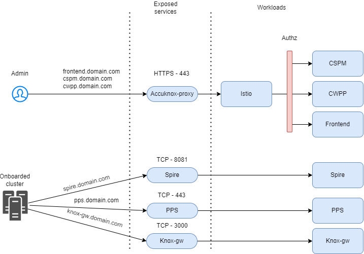

AccuKnox OnPrem Deployment Guide¶
High-Level Architecture Overview¶
AccuKnox onprem deployment is based on Kubernetes native architecture.
AccuKnox OnPrem k8s components¶
Microservices¶
Microservices implement the API logic and provide the corresponding service endpoints. AccuKnox uses Golang-based microservices for handling streaming data (such as alerts and telemetry) and Python-based microservices for other control-plane services.
Databases¶
PostgreSQL is used as a relational database and MongoDB is used for storing JSON events such as alerts and telemetry. Ceph storage is used to keep periodic scanned reports and the Ceph storage is deployed and managed using the Rook storage operator.
Secrets Management¶
Within the on-prem setup, there are several cases where sensitive data and credentials have to be stored. Hashicorp's Vault is used to store internal (such as DB username/password) and user secrets (such as registry tokens). The authorization is managed purely using the k8s native model of service accounts. Every microservice has its service account and uses its service account token automounted by k8s to authenticate and subsequently authorize access to the secrets.
Scaling¶
K8s native horizontal and vertical pod autoscaling is enabled for most microservices with upper limits for resource requirements.
AccuKnox-Agents¶
Agents need to be deployed in target k8s clusters and virtual machines that have to be secured at runtime and to get workload forensics. Agents use Linux native technologies such as eBPF for workload telemetry and LSMs (Linux Security Modules) for preventing attacks/unknown execution in the target workloads. The security policies are orchestrated from the AccuKnox onprem control plane. AccuKnox leverages SPIFFE/SPIRE for workload/node attestation and certificate provisioning. This ensures that the credentials are not hardcoded and automatically rotated. This also ensures that if the cluster/virtual machine has to be deboarded then the control lies with the AccuKnox control plane.
Onboarding Steps for AccuKnox¶
The onboarding process for AccuKnox's on-prem security solution consists of four key steps that the user must complete. Let's go through each step in a thorough, step-by-step manner:

Step 1: Hardware & Prerequisites¶
- Verify hardware, email user, and domain configurations.
- Ensure your environment meets all requirements.
- Time estimate: Varies, allocate sufficient time for review and adjustments.
Step 2: Staging AccuKnox Container Images (For airgapped environments only)¶
- Stage AccuKnox container images in the airgapped setup.
- Reconfirm hardware, email user, and domain requirements.
- Time estimate: ~1 hour.
Step 3: Installation¶
- Install the AccuKnox system within your environment.
- Ensure all prerequisites remain satisfied.
- Time estimate: ~45 minutes.
Step 4: Verification/Validation¶
- Confirm all previous steps were completed successfully.
- Validate hardware, email user, and domain configurations.
- Time estimate: ~1 hour.
AccuKnox onprem deployment is based on Kubernetes native architecture.
Pre-requisites to be prepared by the Customer Team¶
| Pre-requisites | Why is it needed? | Specs |
|---|---|---|
| 3 Virtual machines or bare-metal nodes [Mandatory] | To install the AccuKnox POC control plane in on-prem mode. Root access to the nodes would be required by the AccuKnox team during installation. | - 1 node with at least 4 CPU + 16GB - 2 nodes, each with 8 CPU + 16GB - Each node has at least 256 GB of disk space. - Each node is installed with Debian 13 OS - These 3 nodes should have full ingress + egress connectivity between themselves. - Users/APIs access to ports [443, 8443, 3000, 8081, 9090] should be enabled for all these VMs. |
| Internet Connectivity [Mandatory] | The VMs would require Internet connectivity during the installation. | Egress only access to Port 80 + 443. |
| Email User + Password + email ID + Server Address [Optional] | AccuKnox Control plane allows one to invite other users to the Portal by sending an invitation via email | AccuKnox Control plane configures 5 default users for whom the access will be enabled if this configuration is not provided. |
| Trusted SSL Certificates [Optional] | SSL Certificates are used for AccuKnox Portal. | If trusted certs are not provided, we can use self-signed certs. |
| Domain name entries [Mandatory] | AccuKnox Portal and its REST APIs are accessible using these domain names. | Domain names to configure: - app.accuknox.domain.com - cspm.accuknox.domain.com - cwpp.accuknox.domain.com - reports.accuknox.domain.com |
Hardware & Pre-Requisites¶
VM System Requirements¶
All nodes are expected to make use of Debian 13 as their Operating System
| Type | Nodes | Each node vCPUs | Each Node RAM (GB) | Each node Disk (GB) |
|---|---|---|---|---|
| Master | 1 | 4 | 8 | 256 |
| Worker | 2 | 8 | 16 | 256 |
Container Registry¶
A Harbor container registry will be deployed on the master node if not available. Full Access to the registry is required to push and pull the AccuKnox microservice images from this registry.
Harbor Installation using Ansible¶
AccuKnox team will leverage an ansible playbook that:
- Installs Harbor
- Supports self-signed and letsencrypt-signed certificates.
This playbook is tested with Harbor version 2.6.0 on Ubuntu 24.10 & Debian 13.
External Roles¶
This playbook uses the following 3rd party collections/roles from ansible galaxy:
- geerlingguy.certbot: Installing and setting up certbot for managing letsencrypt-signed certificate.
- geerlingguy.docker: Installing docker and docker-compose.
- community.crypto: Generating self-signed certificate.
- robertdebock.roles: Collection of useful roles used to install Harbor.
Prerequisites¶
Make sure you have ansible and the jmespath python library installed.
python3 -m venv .venv
source .venv/bin/activate
pip3 install ansible jmespath netaddr
You can also install ansible using your distros package manager.
Running the Playbook¶
Please edit the hosts.yaml file based on your environment before running this playbook. E.g.,
hosts:
harbor:
# this should point to a SSH host in your ssh config OR the VMs IP/Domain
- # ansible_host: ""
- # ansible_user: root
- # ansible_ssh_private_key_file: /path/to/ssh-priv-key.pem
+ ansible_host: <your-harbor-host-ip>
+ ansible_user: root
+ ansible_ssh_private_key_file: /home/myuser/.ssh/harbor.pem
vars:
ansible_python_interpreter: /usr/bin/python3
harbor_installation_type: online
# Specify the IP address or the fully qualified domain name (FQDN) of the target host on which to deploy Harbor.
- # harbor_hostname: "example.com"
+ harbor_hostname: "harbor-test.example.com"
harbor_admin_password: "changeme"
# Fill harbor_external_url if you want to enable external proxy.
# Use either harbor_hostname or harbor_external_url
- # harbor_external_url: "https://example.com"
+ harbor_external_url: "https://harbor-test.example.com"
harbor_enable_https: true
## certificate configuration ##
###############################
cert:
- # domain: "example.com"
+ domain: "harbor-test.example.com"
# Both LetsEncrypt and self-signed cannot be enabled at the same time
self_signed:
enable: true
Next,
ansible-galaxy install -r requirements.yaml
ansible-playbook playbook.yaml
If your ansible_user is set to a non-root user on the system, ensure the user has permission to run commands with sudo. If running sudo commands requires a password, pass --ask-become-pass to the ansible-playbook command.
ansible-galaxy install -r requirements.yaml
ansible-playbook playbook.yaml --ask-become-pass
Add Registry CA Certificate to Worker Nodes¶
The harbor CA certificate should be located at /etc/nginx/certs/harbor.crt. You will have to copy it to every worker node under /usr/local/share/ca-certificates/
cat /etc/nginx/certs/harbor.crt
Worker Node:
vi /usr/local/share/ca-certificates/harbor.crt
Youll also have run update-ca-certificates on the worker nodes and restart the container runtime (containerd / docker)
update-ca-certificates
Note: Restart the worker nodes.
Kubernetes Cluster¶
Deploy K0s and initialize a cluster on the master node. Connect the worker nodes to the initialized cluster. Ensure the cluster is functional.
Install k0s¶
wget https://github.com/k0sproject/k0sctl/releases/download/v0.19.4/k0sctl-linux-amd64
chmod +x k0sctl-linux-amd64
sudo mv k0sctl-linux-amd64 /usr/local/bin/k0sctl
Bootstrap the cluster
k0sctl apply -c k0s.yaml
Once the cluster bootstrapping is complete, generate the kubeconfig file:
k0sctl kubeconfig -c k0s.yaml
Persistent Volume Provisioner/Controller¶
Used as data storage for SQL, MongoDB, scanned artifacts and other internal application components.
Longhorn Installation¶
If not already available, Longhorn will be installed on the cluster.
Prerequisites (Preparing Nodes)¶
Following commands need to be run on all the nodes:
#!/bin/bash
apt update -y
modprobe ceph
modprobe rbd
modprobe iscsi_tcp
apt install nfs-common -y
apt-get install open-iscsi -y
Please verify if the preflight check succeeds by following this linked guide before proceeding.
Installation¶
helm install longhorn . --namespace longhorn-system --create-namespace --set global.imageRegistry=<registry_address>
Ingress Controller¶
For load balancing and providing access to the application.
Attach Container Registry¶
If a container registry is available, we can connect to it, otherwise a Container Registry will be deployed as per the container registry prerequisites.
The container registry credentials should be configured in the cluster to access the container images.
Jump Host¶

The jump host should have admin access to the deployed Kubernetes cluster to perform the installation.
The jump host should have 80 GB of storage available. This will be required to temporarily store the container images before pushing them to the container registry.
Tools to be Installed¶
| Tool | Version | Install Command |
|---|---|---|
jq |
1.6 | apt install jq |
unzip |
x.x | apt install unzip |
yq |
v4.40.x | See detailed install script below |
helm |
v3.x.x | curl https://raw.githubusercontent.com/helm/helm/main/scripts/get-helm-3 \| bash |
kubectl |
Supported by cluster | Ensure compatible version is used |
aws |
v2 | See detailed install script below |
docker |
v20.xx | apt install docker.io |
yq Installation (v4.40.x)¶
VERSION=v4.40.5
BINARY=yq_linux_amd64
wget https://github.com/mikefarah/yq/releases/download/${VERSION}/${BINARY}.tar.gz -O - | tar xz
mv ${BINARY} /usr/bin/yq
AWS CLI v2 Installation¶
curl "https://awscli.amazonaws.com/awscli-exe-linux-x86_64.zip" -o "awscliv2.zip"
unzip awscliv2.zip
sudo ./aws/install --bin-dir /usr/local/bin --install-dir /usr/local/aws-cli --update
SMTP Server¶
A working SMTP server is required for:
- User sign-in
- Password change
- Scan notifications
- Sending reports
Required credentials:
- Email Username
- Password
- Sender Email ID
- Email Server Address
Network Requirements¶
External Connections¶
Connectivity between AccuKnox components and other networks.
| Component A | Component/Endpoint B | Ports | Connection Type | Purpose |
|---|---|---|---|---|
| Worker Nodes | VM/k8s clusters to be protected | 443, 3000, 8081, 9090 | Inbound to A | For the runtime security agents to connect to the platform |
| Worker Nodes | Instance used for scanning/platform access | 443 | Inbound to A | To access the platform and for scan results to be sent |
| External Code Repository | Worker Nodes | 443 | Bidirectional | To connect and scan the code stored in an external code repository |
| Master Node and Worker Nodes | Internet | * | Outbound from A | Temporary connection for initial setup |
DNS Provisioning¶
A DNS record will need to be created for the AccuKnox endpoints after installation.
- A domain name must be provided for the AccuKnox installation.
SSL Certificates¶
Trusted SSL certificates need to be provided for the AccuKnox application.
Staging and Installation Steps¶
Installation Package¶
-
Helm charts archive
-
Kubectl and Helm tools are pre-requisite tools for using these helm charts
tar xvf accuknox-helm-charts.tgz
cd Helm-charts
Push to Airgapped registry¶
If you want to use your private/local registry as the exclusive source of images for the entire cluster, please install the accuknox-onprem-mgr component first.
| Value | Description | Provider |
|---|---|---|
registry.username |
Registry User | Customer |
registry.password |
Registry Password | Customer |
registry.address |
The registry server address | Customer |
ecr.user |
Credential to pull images from AccuKnox registry | AccuKnox |
ecr.password |
Credential to pull images from AccuKnox registry | AccuKnox |
cd airgapped-reg
# configure aws cli with AccuKnox provided secrets
aws configure
# connect to docker Accuknox docker registry
aws ecr get-login-password --region us-east-2 | docker login --username AWS --password-stdin 956994857092.dkr.ecr.us-east-2.amazonaws.com
# connect to airgapped registry
docker login <registry_address>
# upload images to private registry
./upload_images.sh <registry_address>
./upload_onboarding_images.sh <registry.address>
# upload helm charts to private registry
./upload_helm.sh <registry.address>
# create a namespace
MGR_NS="accuknox-onprem-mgr"
CERT_MGR_NS="cert-manager"
kubectl create ns $MGR_NS
kubectl create ns $CERT_MGR_NS
kubectl create secret docker-registry airgapped-reg --docker-server=<registry.address> --docker-username=<registry.username> --docker-password=<registry.password> -n $MGR_NS
kubectl create secret docker-registry airgapped-reg --docker-server=<registry.address> --docker-username=<registry.username> --docker-password=<registry.password> -n $CERT_MGR_NS
# <registry_address> can include port as well
./install-certmanager.sh <registry_address>
./install-onprem-mgr.sh <registry_address>
kubectl apply -k .
kubectl apply -f onprem-mgr.yaml
Update override.values¶
Only for air-gapped/private registry environment
Set global.onprem.airgapped to true in the override-values.yaml file.
Before You Start¶
- Set your domain name in the override values file by replacing
<your_domain.com>with your actual domain. - Set your SSL preferences in the override values file by editing the
sslblock. - If the environment is air-gapped or using a private registry, make
ssl.certmanager.install: false
ssl:
certmanager:
install: false
SSL Certificate Deployment Models¶
We offer three deployment models for SSL certificates:
1. Auto-generated Self-signed Certificate¶
We auto generate the needed self signed certificates for the client. To enable this option, set the following in your override-values.yaml:
ssl:
selfsigned: true
customcerts: false
2. Certificate Signed by a Known Authority¶
Client provides certificate signed by a known authority:
ssl:
selfsigned: false
customcerts: true
3. Self-signed Certificates Provided by the Customer¶
Client provides their own self-signed certificate:
ssl:
selfsigned: true
customcerts: true
AccuKnox Installation Package¶
The override-values.yaml file contains installation-specific configurations:
- Override
<your_domain.com>with your actual domain. - Set your SSL preferences in the override values by changing the
sslblock.
Install AccuKnox Base Dependencies¶
Run the following commands:
kubectl create namespace accuknox-chart
helm upgrade --install -n accuknox-chart accuknox-base accuknox-base-chart \
--create-namespace -f override-values.yaml
IMPORTANT¶
Some resources deployed in the above step take time to provision. Running the next command too early may break the installation.
Run the below script to make sure that the provisioning was done successfully:
while true
do
status=$(kubectl get cephcluster -n accuknox-ceph rook-ceph -o=jsonpath='{.status.phase}')
[[ $(echo $status | grep -v Ready | wc -l) -eq 0 ]] && echo "You can proceed" && break
echo "wait for initialization"
sleep 1
done
Install AccuKnox Pre Chart¶
| Value | Description | Provider |
|---|---|---|
email.user |
Email user used for signup invites, reports | Customer |
email.password |
Email password | Customer |
email.host |
Email server address | Customer |
email.from |
Sender email address (e.g. noreply@domain.com) | Customer |
ecr.user |
Registry credential username | AccuKnox |
ecr.password |
Registry credential password | AccuKnox |
helm upgrade --install -n accuknox-chart accuknox-pre pre-chart \
--create-namespace -f override-values.yaml \
--set global.email.from="" \
--set global.email.user="" \
--set global.email.password="" \
--set global.email.host="" \
--set ecr.user="" \
--set ecr.password=""
Install AccuKnox Microservices Chart¶
| Value | Description | Provider |
|---|---|---|
email.user |
Email user used for signup invites, reports | Customer |
email.password |
Email password | Customer |
email.host |
Email server address | Customer |
email.from |
Sender email address | Customer |
helm upgrade --install -n accuknox-chart accuknox-microservice accuknox-microservice-chart \
--set global.email.user="" \
--set global.email.from="" \
--set global.email.password="" \
--set global.email.host="" \
--create-namespace -f override-values.yaml
Map DNS¶
Run the following script to generate DNS entries:
./generate_dns_entries
Install Certificates¶
Certificates Signed by a Known Authority¶
./install_certs.sh <certificate_path> <certificate_key_path> <ca_path>
Self-Signed Certificates (Provided by Customer)¶
Install NGINX Ingress¶
Navigate to the addons directory:
cd airgapped-reg/addons
Install the NGINX ingress controller:
helm upgrade --install ingress-nginx ingress-nginx \
--namespace ingress-nginx --create-namespace \
-f ingress-nginx.yaml \
--set controller.image.registry=<registry_address> \
--set controller.admissionWebhooks.image.registry=<registry_address>
Update domains in ingress.yaml and apply it:
kubectl apply -f ingress.yaml
Verify Installation¶
After successful installation, you should be able to access the following URLs:
- https://frontend.<your-domain.com>/ Access the Sign-in page.
- https://cspm.<your-domain.com>/admin/ Access the CSPM Admin page.
- https://cwpp.<your-domain.com>/cm/ Access the CWPP Configuration Management page.

References¶
- AccuKnox Deployment and Operations FAQs
- AccuKnox Splunk Integration Guide
- KubeArmor Splunk Integration Guide
- CSPM: Use-cases & Scenarios
- CWPP: Use-cases & Scenarios
- Detailed Support Matrix